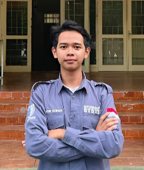

Saya adalah seorang mahasiswa yang sedang menempuh pendidikan di Universitas Lampung. Saya memiliki ketertarikan dalam bidang teknologi informasi dan pengembangan perangkat lunak. Selain itu, saya juga aktif dalam berbagai kegiatan organisasi di kampus sepert DPM U dan Himakom.
Saya memiliki pengalaman dalam pengembangan web dan mobile, serta pemrograman dengan berbagai bahasa seperti Java, Python, dan C++. Saya juga memiliki kemampuan dalam desain antarmuka pengguna (UI) dan pengalaman dalam bekerja dengan tim.
Nama: Tri Lindu Aji
NPM: 2417052032
Jurusan: S1 Ilmu Komputer
Prodi: Sistem Informasi
Fakultas: Fakultas Matematika dan Ilmu Pengetahuan Alam
Universitas: Universitas Lampung
Saya memiliki beberapa hobi yang saya nikmati di waktu luang saya. Beberapa di antaranya adalah: